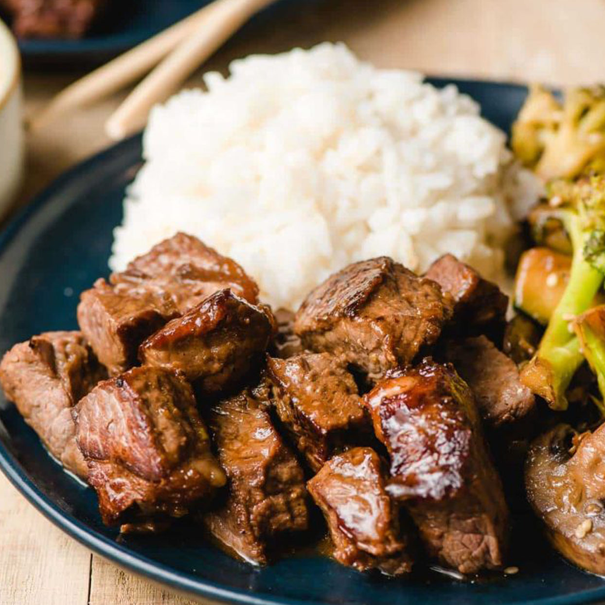
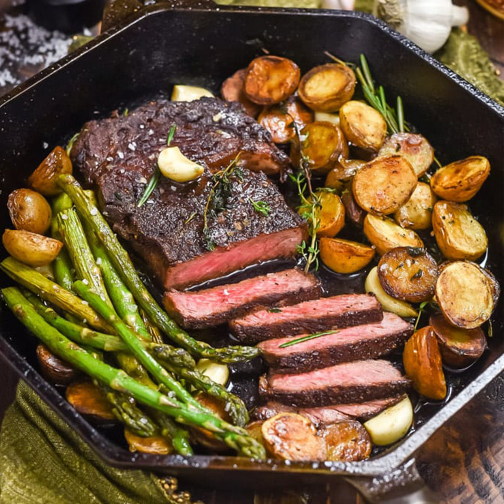
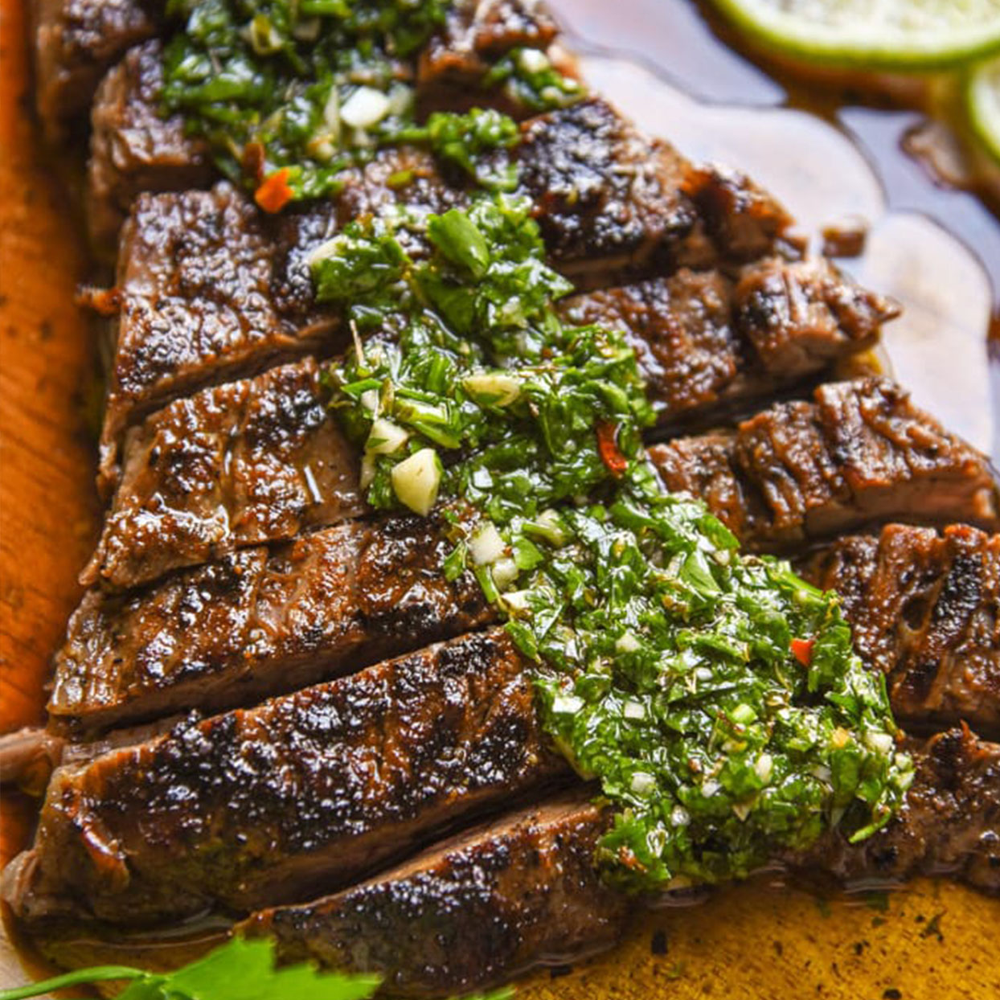
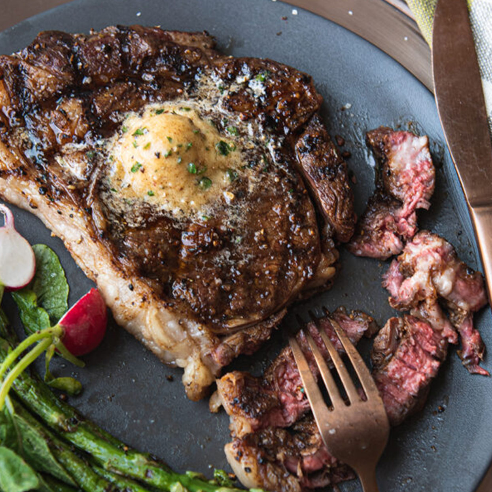

Grilled Flank Steak with Tomato Salad
"Savor our Grilled Flank Steak paired with a vibrant Tomato Salad. Tender steak meets
ripe tomatoes for a harmonious burst of flavor. Elevate your dining with this exquisite dish, a
celebration of quality ingredients and expert craftsmanship."

Cilantro-Lime Flank Steak Sheet with Spicy Peanut Sauce
"Savor our Cilantro-Lime Flank Steak Sheet Pan Dinner with Spicy Peanut Sauce.
Succulent steak meets zesty sauce for a flavorful fusion. Convenient and delicious, it's the perfect
meal choice."

Hibachi Steak
"Delight in the sizzle and flavor of our Hibachi Steak. Tender cuts grilled to
perfection, offering a mouthwatering experience with each bite. Elevate your dining with this classic
dish, prepared with skill and served with flair."

Pan-Fried Garlic Butter Steak with Crispy Potatoes and Asparagus
"Savor our Pan-Fried Garlic Butter Steak with crispy potatoes and asparagus. Tender
steak infused with garlic butter, paired with perfectly cooked sides for a delightful balance of flavors
and textures. Elevate your meal with this satisfying and flavorful dish."

Lime, soy and sesame steak with mushrooms and sugarsnap peas
"Savor our Lime, Soy, and Sesame Steak with mushrooms and sugarsnap peas. Succulent
steak marinated in tangy flavors, paired with savory mushrooms and crisp peas for a delicious harmony.
Crafted to perfection, it's a flavorful delight in every bite."

Steak Frites with Black Garlic Butter
"Indulge in our Steak Frites with Black Garlic Butter. Juicy steak served with
golden, crispy fries, topped with rich black garlic butter. A savory symphony of flavors awaits in every
bite, delivering a culinary experience that's simply irresistible."

Easy Crock Pot Round Steak with Mushrooms
"Simplify your mealtime with our Easy Crock Pot Round Steak with Mushrooms. Tender
round steak slow-cooked to perfection with savory mushrooms, resulting in a comforting and flavorful
dish. Enjoy a hassle-free dinner option that's sure to please the whole family."

Garlic Butter Steak Bites and Potatoes
"Delight in our Garlic Butter Steak Bites with Potatoes. Succulent steak bites seared
to perfection in garlic butter, served alongside tender potatoes for a satisfying and flavorful meal.
Experience the irresistible taste of this classic dish, crafted with care and flavor."

Chimichurri Steak
"Savor the bold flavors of our Chimichurri Steak. Tender cuts of steak, grilled to
perfection and topped with our vibrant chimichurri sauce. Elevate your dining experience with this
classic dish, bursting with fresh herbs and spices for a memorable taste sensation."

grilled ribeye steak
"Indulge in the perfection of our Grilled Ribeye Steak. Juicy, succulent ribeye,
expertly grilled to your preference, offering a mouthwatering experience with each savory bite. Enjoy
the rich flavor and tenderness of this classic steakhouse favorite."